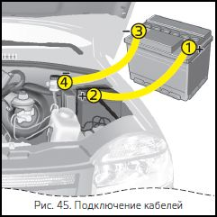

Chevrolet NIVA-ЭКСПЛУАТАЦИЯ АВТОМОБИЛЯ
ПУСК ДВИГАТЕЛЯ
1.Перед пуском следует нажать на педаль тормоза или переместить вверх рычаг стояночного тормоза, затем перевести рычаг переключения передач в нейтральное положение.
2.Нажмите на педаль сцепления, вставьте ключ в выключатель зажигания и включите стартер. Если двигатель не начнёт работать с первой попытки, выключите зажигание и через 40 секунд повторно включите стартер. Не включайте стартер более чем на 10 секунд, т.к. это может привести к поломке самого стартера.
Внимание
Пуск двигателя при низком уровне рабочей жидкости в бачке гидроусилителя рулевого управления категорически запрещается.
Во время пуска двигателя не следует нажимать на педаль акселератора.
Если не удалось запустить двигатель с первых двух попыток, нажмите на педаль акселератора до упора и включите стартер на 10 секунд для продувки цилиндров, после чего отпустите педаль акселератора и запустите двигатель в установленном порядке.
После пуска двигателя отпустите ключ зажигания, который автоматически возвратится в положение I, см. рис.26.
При устойчивой работе двигателя после пуска плавно отпустите педаль сцепления.
Пуск двигателя в холодное время года
Данные рекомендации обеспечивают пуск полностью исправного холодного двигателя, без вспомогательных устройств, при температуре окружающего воздуха до минус 25 °С, с аккумуляторной батареей, заряженной не менее чем на 75%.
1.Класс вязкости моторного масла по SAE должен соответствовать температуре окружающей среды.
2.Класс испаряемости бензина – для зимнего периода года в зависимости от климатического района применения в соответствии с ГОСТ Р 51105-97.
3.Перед пуском, включив зажигание, сделайте паузу в несколько секунд, чтобы электробензонасос успел поднять давление в топливной рампе до рабочего значения.
4.Перед пуском и во время пуска следует до упора выжать педаль сцепления, а на педаль акселератора не нажимать.
5.Если в течение 10 секунд работы стартера двигатель не запустился, следует повторить запуск не менее чем через 40 секунд.
6.Если вторая попытка пуска была безуспешной, третью следует начинать с полностью нажатой педалью акселератора. После 6–8 секунд продувки начинайте плавно отпускать педаль акселератора, задержав её в положении, при котором двигатель начнет запускаться.
7.Если после третьей попытки двигатель не запустился, то следует обратиться к официальному дилеру ЗАО «Джи Эм–АВТОВАЗ» для детального выяснения причины неудачного запуска.
Предупреждение
Выхлопные газы ядовиты! Поэтому помещение, в котором производится пуск и прогрев двигателя, должно хорошо вентилироваться.
Внимание
После запуска дайте двигателю поработать на холостых оборотах не менее двух минут. Во время прогрева не вращайте и не покачивайте рулевое колесо.
После запуска двигателя при низких температурах в течение нескольких минут возможен стук опор гидравлических рычагов клапанов газораспределительного механизма из-за повышенной вязкости моторного масла.
Не является неисправностью включение вентиляторов системы охлаждения при холодном двигателе или продолжение работы после остановки прогретого двигателя.
Пуск двигателя с помощью вспомогательного (источника питания) стартового кабеля.
Если аккумулятор разрядился, двигатель можно запустить с помощью вспомогательных стартовых кабелей и аккумулятора другого автомобиля.
При этом нужно соблюдать крайнюю осторожность. Любое отклонение от приведенной инструкции может привести к травмам или повреждениям при взрыве аккумуляторных батарей и к повреждению электрических устройств обоих автомобилей.
Избегайте искр и открытого пламени вблизи аккумулятора.
• Выхлопные газы ядовиты! Поэтому помещение, в котором производится пуск и прогрев двигателя, должно хорошо вентилироваться или должно быть оборудовано системой отсоса выхлопных газов.
• Не допускайте попадания аккумуляторной жидкости в глаза, на кожу, ткань и лакированные поверхности. Жидкость содержит серную кислоту, которая при непосредственном контакте вызывает травмы и повреждения.
• При работе с аккумулятором одевайте защитные очки.
• Используйте вспомогательный аккумулятор постоянного напряжения (12 В). Его емкость (А/ч) не должна быть значительно меньше емкости разряженного аккумулятора. Значения напряжения и емкости указаны на аккумуляторах.
• Разряженный аккумулятор не отключайте от сети.
• Отключите ненужные потребители тока.
• Во время всей процедуры не наклоняйтесь над аккумулятором.
• Полюсные зажимы одного кабеля не должны касаться зажимов другого.
• Затяните стояночный тормоз.
• Аккумулятор находится в моторном отделении.
 Подключите кабели в показанной на рис.45 последовательности:
1. Подключите кабель к положительному полюсу 1 вспомогательного аккумулятора (знак «плюс» на корпусе аккумулятора или на клемме).
2. Другой конец данного кабеля подключите к положительному полюсу 2 разряженного аккумулятора (знак «плюс»).
3. Подключите второй кабель к отрицательному полюсу 3 вспомогательного аккумулятора (знак «минус»).
4. Другой конец второго кабеля 4 соедините с массой автомобиля - например, подключите к блоку двигателя или к любому неокрашенному резьбовому соединению.
• Не подключайте кабель к отрицательному полюсу разряженного аккумулятора!
• Точка подключения должна находиться как можно дальше от разряженного аккумулятора.
• Кабели проложите таким образом, чтобы они не касались вращающихся деталей моторного отделения.
• Двигатель дающего ток автомобиля может в ходе запуска работать. Попытки запуска предпринимайте продолжительностью не более 15 секунд и интервалами в 1 минуту. После запуска оставьте работать оба двигателя на холостом ходу с подключенными кабелями примерно 3 минуты.
• Чтобы избежать избыточных напряжений в электрической системе, перед отключением кабелей от клемм следует включить какой-либо потребитель электроэнергии (например, свет, обогрев заднего стекла) на потребляющем ток автомобиле.
• Снятие кабелей производить точно в обратном порядке.